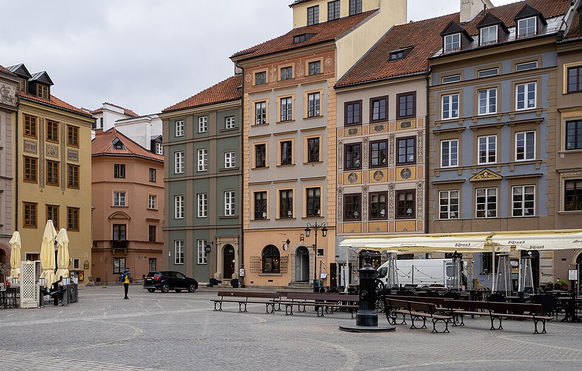

Про автора
Локотош Ілля Миколайович
Дата й місце народження — 28 лютого, Київ.
Освіта — школа №6, КПІ ім. Ігоря Сікорського.
Захоплення
- Футбол
- Пейнтбол
- Волейбол
Улюблені твори
- Зелена книга
- Веном
- Воно
Улюблені книги — Розмова з Богом, Атомні звички.
Клацніть «Футбол» або «Пейнтбол» для зміни кольорів.
Варшава
Варшава мені подобається через Старе місто. Там можна пройтися від Замкової площі до Ринкової й подивитися на старі будинки.
